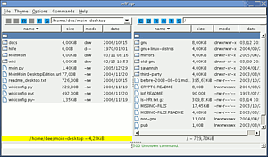

wlFxp
Archivierte Anleitung
Dieser Artikel wurde archiviert, da er - oder Teile daraus - nur noch unter einer älteren Ubuntu-Version nutzbar ist. Diese Anleitung wird vom Wiki-Team weder auf Richtigkeit überprüft noch anderweitig gepflegt. Zusätzlich wurde der Artikel für weitere Änderungen gesperrt.
Zum Verständnis dieses Artikels sind folgende Seiten hilfreich:
wlFxp  ist ein Java-basierter FTP/FXP-Client, der von FlashFXP, einem weit verbreiteten FTP/FXP-Client für das Windows Betriebssystem, abgeleitet wurde.
ist ein Java-basierter FTP/FXP-Client, der von FlashFXP, einem weit verbreiteten FTP/FXP-Client für das Windows Betriebssystem, abgeleitet wurde.
Funktionsübersicht:
"Site Manager", ähnlich der Lesezeichenverwaltung eines Browsers
"Queue Manager", der die Warteschlange kontrolliert
Proxy Unterstützung (socks4/5)
OTP und TLS/SSL Unterstützung
Installation und Start¶
Es gibt zwei Möglichkeiten wlFxp zu nutzen. Vor der Installation von wlFxp muss aber auf jeden Fall Java von Sun installiert werden.
jar-Paket¶
Man kann wlFxp ohne Installation nutzen, indem man das (plattformunabhängige) jar-Paket von der Downloadseite herunterlädt.
Danach wechselt man in das Downloadverzeichnis und startet wlFxp mit einem Doppelklick (falls der Dateimanager korrekt damit verknüpft ist) oder alternativ dazu mit folgendem Aufruf im Terminal [2]:
java -jar wlFxp-0.4.jar
deb-Paket¶
Möchte man das Programm dauerhaft installieren, so lädt man von der Downloadseite das deb-Paket herunter und installiert es wie gewohnt. [1]
Linkto-Suche: Fremdquellen
Man startet wlFxp per Alt + F2 oder im Terminal mit
wlfxp
oder man legt bei Bedarf einen passenden Starter im Menü an [3].
Benutzung¶
Das Programm hat zwei Browserfenster. Jeweils darüber befindet sich eine Button-Leiste. Standardmäßig ist links das lokale Heimatverzeichnis des Benutzers. Die Button-Leiste hat folgende Funktionen:

| Übersicht der Buttons | |
| Button | Funktion |
| "C" | Verbinden |
| "D" | Verbindung trennen |
| "R" | Ansicht aktualisieren |
| "A" | Transfer abbrechen |
| "T" | Daten transferieren |
| "S" | lokale/entfernte Verzeichnis-Ansicht wechseln |
Zu einem Server verbinden¶
Da sich nun im linken Fenster das lokale Verzeichnis befindet, klickt man über dem rechten Fenster, in der blauen Buttons-Leiste auf das "C", dann auf "QuickConnect". Man trägt die URL und den Port (Standard ist 21) ein. Entweder man loggt sich als "Anonym" ein oder man verwendet Benutzernamen und Passwort. Unter dem Reiter "SSL" kann man Einstellungen über Verschlüsselungen treffen. Klickt man auf "Connect" so wird automatisch verbunden.
Nach erfolgreicher Anmeldung sieht man die Verzeichnis-Struktur des Servers.
Ein Beispiel¶
URL: ftp.uni-bremen.de
PORT: 21 und einen Haken bei Anonym setzen.
So kommt man auf den öffentlich zugänglichen FTP-Server der Universität Bremen.
Herunterladen von Daten¶
Methode 1¶
Man wählt die gewünschten Dateien und klickt entweder auf den blauen Button "T", oder per Rechtsklick auf die Datei und wählt dort "Transfer". Der Download beginnt, die ausgewählten Daten erscheinen in der Queue (Warteschlange) unten links.
Methode 2¶
Man wählt die gewünschten Dateien, dann Rechtsklick und "Queue" auswählen. Die ausgewählten Daten erscheinen in der Queue unten links, werden jedoch noch nicht heruntergeladen. Den Download kann man aus der Queue heraus, mit einem Rechtsklick und "Transfer starten" starten.
Nutzung von FXP¶
Unter FXP versteht man das Verschieben von Daten von einem Server zu einem anderen. Man blendet dazu im linken Fenster das lokale Verzeichnis mit einem Klick auf "S" aus. Dann auf "C" und wählt sich in den zweiten Server ein. Jetzt kann man Daten von einem Server zum anderen über die oben genannten Methoden kopieren.
- Erstellt mit Inyoka
-
 2004 – 2017 ubuntuusers.de • Einige Rechte vorbehalten
2004 – 2017 ubuntuusers.de • Einige Rechte vorbehalten
Lizenz • Kontakt • Datenschutz • Impressum • Serverstatus -
Serverhousing gespendet von